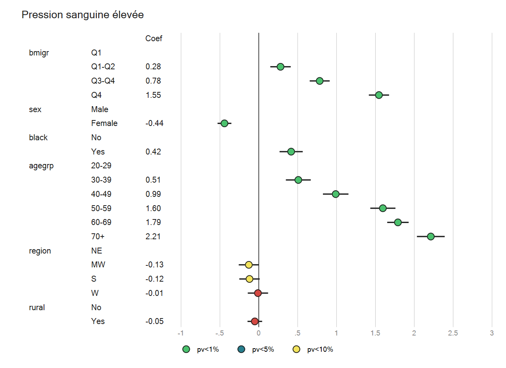
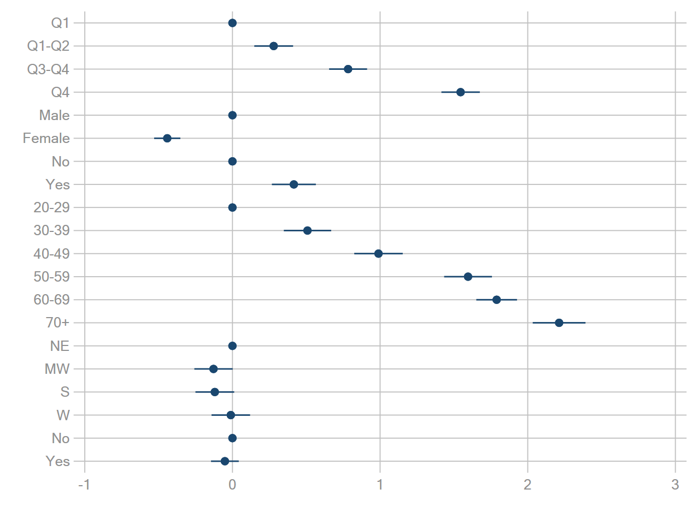
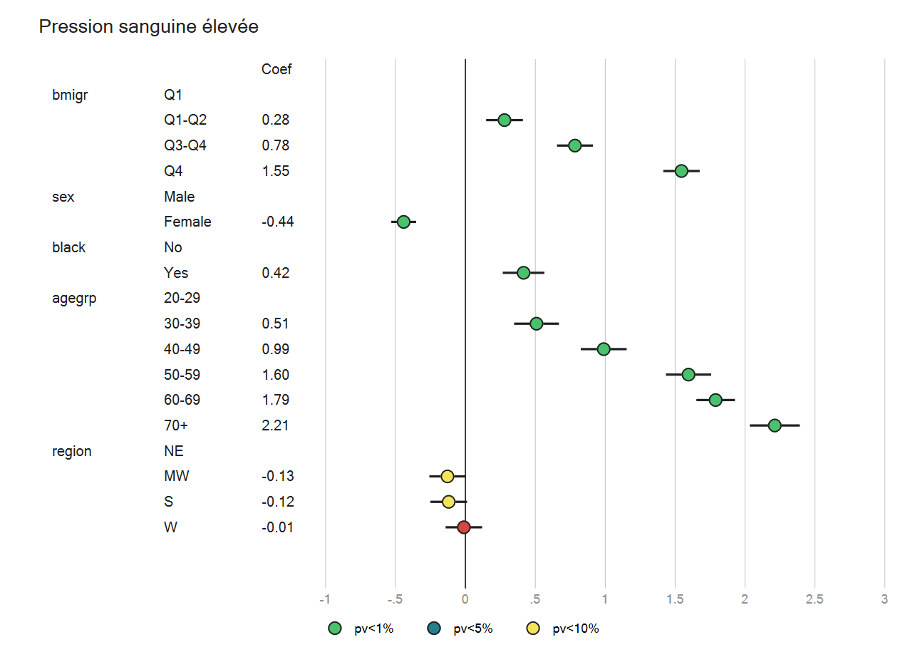
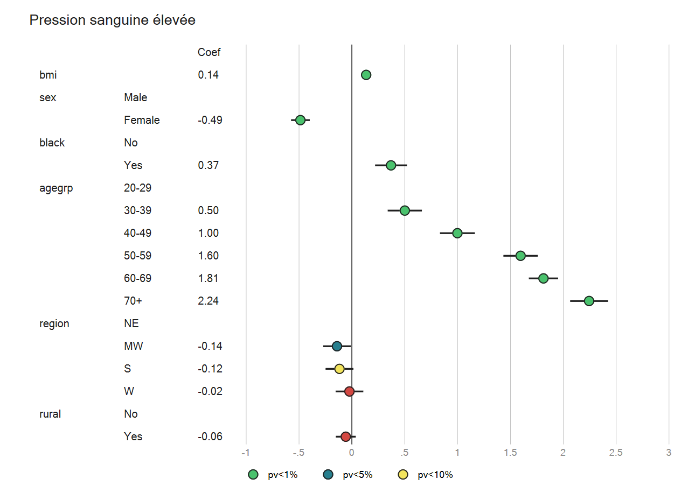
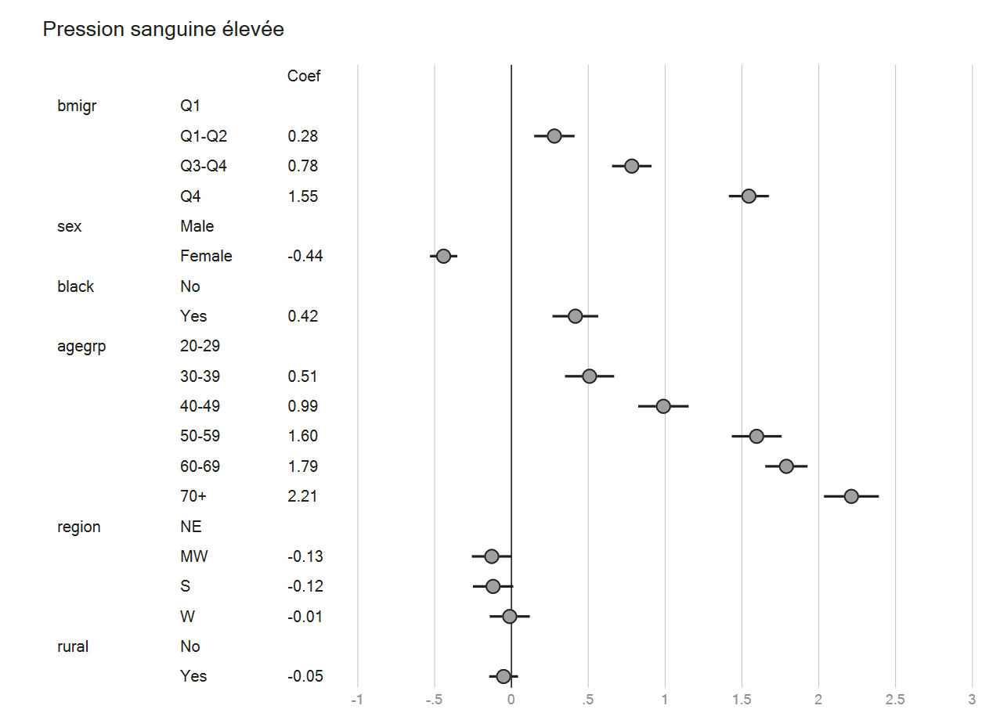

Graphique 101 : « simplification » et quelques indications sur la programmation
https://mthevenin.github.io/stata_fr/graphiques.html#571_Forest_plot
Graphique 101 simplifié du support formation 2020

L’exécution du graphique en elle-même ne pose pas vraiment de problème, elle se base sur les éléments qui permettent de produire des graphiques type « lollipop » ou « parallel coordinates ». En revanche, la difficulté réside dans la récupération des noms des variables et des labels des modalités.
Lorsque toutes les variables sont discrètes, ça va encore, mais lorsque on introduit une ou plusieurs variables continues ou des intéractions ça se complique un peu. J’ai réglé la question pour les variables continues, et sur le même principe ça devrait fonctionner pour les intéractions (à tester tout de même).
Ce type de graphique me semble, mais il y a un peu de travail à prévoir, pouvoir être programmé dans une commande.
use nhanes2, clear
grstyle init
grstyle set mesh, compact
grstyle set legend 6, nobox
xtile bmigr = bmi, n(4)
label define bmi 1 "Q1" 2 "Q1-Q2" 3 "Q3-Q4" 4 "Q4", modify
label value bmigr bmi
label define ny 0 "No" 1 "Yes", modify
label value black ny
label value rural ny
qui keep highbp bmigr sex black agegrp region rural
logit highbp i.bmigr i.sex i.black i.agegrp i.region i.rural
coefplot, drop(_cons) base
gen(prefixe)logit highbp i.bmigr i.sex i.black i.agegrp i.region i.rural
qui coefplot, gen(b) drop(_cons) base nodraw
local varlist bmigr sex black agegrp region rural
/*
+---------------------------------------------------------------+
| bat bb bV bse bll1 bul1 |
|---------------------------------------------------------------|
1. | 1 0 0 0 0 0 |
2. | 2 .279448 .0044987 .0670724 .1479886 .4109074 |
3. | 3 .7833707 .004304 .0656046 .6547882 .9119533 |
4. | 4 1.545453 .0044103 .0664102 1.415291 1.675614 |
5. | 5 0 0 0 0 0 |
|---------------------------------------------------------------|
6. | 6 -.4415582 .0020558 .0453412 -.5304254 -.3526911 |
7. | 7 0 0 0 0 0 |
8. | 8 .4160118 .0057786 .0760173 .2670206 .565003 |
9. | 9 0 0 0 0 0 |
10. | 10 .5083148 .0066892 .0817873 .3480147 .6686149 |
|---------------------------------------------------------------|
11. | 11 .9891738 .0070185 .0837767 .8249744 1.153373 |
12. | 12 1.595775 .0068213 .0825909 1.4339 1.757651 |
13. | 13 1.789531 .0049481 .0703424 1.651662 1.927399 |
14. | 14 2.212622 .0083187 .0912071 2.033859 2.391385 |
15. | 15 0 0 0 0 0 |
|---------------------------------------------------------------|
16. | 16 -.1281252 .0043867 .0662324 -.2579384 .001688 |
17. | 17 -.1194366 .0044918 .0670207 -.2507948 .0119217 |
18. | 18 -.0111016 .0044348 .0665942 -.1416239 .1194207 |
19. | 19 0 0 0 0 0 |
20. | 20 -.0511447 .0023003 .0479612 -.145147 .0428576 |
+---------------------------------------------------------------+
*/C’est là qu’on récupère tous les labels et les noms de variables qui vont être transformer en valeur par la suite en variables. On va comme d’habitude utiliser les fonctions macros pour les labels des macros empilées. On va devoir générer une boucle par variable de la liste, et pour chaque variable une boucle pour tous ses labels.
La macro mod va lister toutes les labels des modalités, et la macro var va lister les noms de variables
foreach v of local varlist {
local labn: value label `v'
levelsof `v', local(l)
foreach l2 of local l {
local lab`l2': label `labn' `l2'
local mod `mod' `lab`l2''
local var `var' `v'
}
}
/*
_mod: Q1 Q1-Q2 Q3-Q4 Q4 Male Female No Yes 20-29 30-39 40-49 50-59 60-69 70+ NE MW S W No Yes
_var: bmigr bmigr bmigr bmigr sex sex black black agegrp agegrp agegrp agegrp agegrp
agegrp region region region region rural rural
*/On a bien 20 labels générés et 20 noms de variables (4 pour lavariable bmigr, 2 pour la variable sex ……)
Pour les labels pas de difficulté, on va mettre leur valeur sur chaque ligne. Pour les variables en revanche, on va garder un seul nom de variable, qui se situera sur la ligne de la première modalité. La variable vdiff permet de repérer les changements de nom de variable d’une ligne à la suivante
* variable lab
gen lab="."
local i = 1
foreach lab of local mod {
qui replace lab="`lab'" in `i++'
qui replace lab="." if _n>`n'
}
* variable var
gen var="."
local i = 1
foreach var2 of local var {
qui replace var="`var2'" in `i++'
}
/*
+-----------------+
| lab var |
|-----------------|
1. | Q1 bmigr |
2. | Q1-Q2 bmigr |
3. | Q3-Q4 bmigr |
4. | Q4 bmigr |
5. | Male sex |
|-----------------|
6. | Female sex |
7. | No black |
8. | Yes black |
9. | 20-29 agegrp |
10. | 30-39 agegrp |
|-----------------|
11. | 40-49 agegrp |
12. | 50-59 agegrp |
13. | 60-69 agegrp |
14. | 70+ agegrp |
15. | NE region |
|-----------------|
16. | MW region |
17. | S region |
18. | W region |
19. | No rural |
20. | Yes rural |
+-----------------+
*/La variable vdiff permet de repérer les changements de nom de variable d’une ligne à la suivante. On remplace la valeur de var par un blanc lorsque le nom de la variable est identique entre une ligne et la précédente
gen vdiff = var[_n] != var[_n-1]
replace var = "" if vdiff!=1
drop vdiff
/*
+-------------------------+
| lab vdiff var |
|-------------------------|
1. | Q1 1 bmigr |
2. | Q1-Q2 0 |
3. | Q3-Q4 0 |
4. | Q4 0 |
5. | Male 1 sex |
|-------------------------|
6. | Female 0 |
7. | No 1 black |
8. | Yes 0 |
9. | 20-29 1 agegrp |
10. | 30-39 0 |
|-------------------------|
11. | 40-49 0 |
12. | 50-59 0 |
13. | 60-69 0 |
14. | 70+ 0 |
15. | NE 1 region |
|-------------------------|
16. | MW 0 |
17. | S 0 |
18. | W 0 |
19. | No 1 rural |
20. | Yes 0 |
+-------------------------+
*/Les variables lab et var seront utilisées comme labels à deux nuages de points (avec x fixes)
Comme ce graphique utilise comme variable visuelle la couleur des bulles selon la valeur des pvalues, il faut les calculer, et générer des variables qui indique quelle couleur sera affectée aux bulle (variables p01 p05 p10 p11). On génère ensuite un jeu de variable selon la valeur de p* (1 ou .).
Une version du graphique sans cette information supplémentaire, est donnée plus loin (donc programme plus court).
**Calcul pvalue
capt drop pv
gen pv = (1-normal(abs(bb)/(bse)))*2
format pv %9.4f
format bb %9.2f
replace bb=. if bb==0
* Pour conserver la première variable en haut et la dernière en bas
* On génère donc le graph sur la partie négative de y
gen bat2 = -bat
* coordonnées de x pour nom variable, labels et valeur coeff
capt drop xl xv xb xp01 xp05 xp10 xp11
gen xv = -3 // nom variable
gen xl = -2.2 // label modalité
gen xb = -1.5 // valeur coef
Pour les modalités en référence on peut rapidement replacer la valeur de coef, un blanc, par “ref”.
On a toutes les informations pour générer le graphique, qui emprunte les éléments vus pour les graphiques types “lollipop” et les graphiques type “parallel coordinates”
*Graph
colorpalette viridis, select(11 7) nograph
local c1 ""`r(p1)'""
local c2 ""`r(p2)'""
colorpalette inferno, select(14 9) nograph
local c3 ""`r(p1)'""
local c4 ""`r(p2)'""
local mopts1 mc(%0) mlabc(gs2) mlabs(3)
local mopts2 msize(2.5) mlc(gs2)
tw scatter bat2 xv if var!="", mlabel(var) `mopts1' /// noms variables
|| scatter bat2 xl if lab!="", mlabel(lab) `mopts1' /// noms labels
|| scatter bat2 xb if bb!=., mlabel(bb) `mopts1' /// valeurs coef
|| pcspike bat2 bll1 bat2 bul1 , lw(.5) lc(gs2) /// intervalle de confiance
|| scatter bat2 bb if pv<.01, mc("`c1'") `mopts2' /// bulle si pv<1%
|| scatter bat2 bb if pv>=.01 & pv<.05, mc("`c2'") `mopts2' /// bulle si pv<5%
|| scatter bat2 bb if pv>=.05 & pv<.1, mc("`c3'") `mopts2' /// bulle si pv<10%
|| scatter bat2 bb if pv>=.1, mc("`c4'") `mopts2' /// bulle si pv>=10%
|| , xlabel(-1(.5)3, glw(vthin) labc()) ylabel(,nogrid labc(%0)) ytitle("") ///
xline(0, lc(gs2) lw(vthin)) ///
text(0 -1.35 "Coef", color(gs2) size(3)) xline(0, lw(.2) lc(gs2)) ///
title("Pression sanguine élevée" " ", pos(11) color(gs2)) scale(.7) ///
legend(order(5 "pv<1%" 6 "pv<5%" 7 "pv<10%") row(1))
Ensemble du programme
Effectivement c’est long, mais il est déjà à un bon niveau d’automatisation (si seulement variables discrètes).
Il suffit de quelques modifications au début (coefplot et liste des variables en macro pour générer un graphique différent) => voir exemple qui retire la variable rural du graphique
use nhanes2, clear
grstyle init
grstyle set mesh, compact
grstyle set legend 6, nobox
xtile bmigr = bmi, n(4)
label define bmi 1 "Q1" 2 "Q1-Q2" 3 "Q3-Q4" 4 "Q4", modify
label value bmigr bmi
label define ny 0 "No" 1 "Yes", modify
label value black ny
label value rural ny
qui keep highbp bmig sex black agegrp region rural
logit highbp i.bmigr i.sex i.black i.agegrp i.region i.rural
qui coefplot, gen(b) drop(_cons) base nodraw
local varlist bmigr sex black agegrp region rural
qui sum bat, d
local n `r(max)'
foreach v of local varlist {
local labn: value label `v'
levelsof `v', local(l)
foreach l2 of local l {
local lab`l2': label `labn' `l2'
local mod `mod' `lab`l2''
local var `var' `v'
}
}
* variable lab
gen lab="."
local i = 1
foreach lab of local mod {
qui replace lab="`lab'" in `i++'
qui replace lab="." if _n>`n'
}
* variable var
gen var="."
local i = 1
foreach var2 of local var {
qui replace var="`var2'" in `i++'
}
* On enlève les noms de variable répliquées
gen vdiff = var[_n] != var[_n-1]
replace var = "" if vdiff!=1
drop vdiff
* Calcul pvalue
capt drop pv
gen pv = (1-normal(abs(bb)/(bse)))*2
format pv %9.4f
format bb %9.2f
replace bb=. if bb==0
* Pour conserver la première variable en haut et la dernière en bas
* On génère donc le graph sur la partie négative de y
gen bat2 = -bat
* coordonnées de x (hors bulles pour coef)
capt drop xl xv xb xp01 xp05 xp10 xp11
gen xv = -3 // nom variable
gen xl = -2.2 // label modalité
gen xb = -1.5 // nom variable
* Graph
colorpalette viridis, select(11 7) nograph
local c1 ""`r(p1)'""
local c2 ""`r(p2)'""
colorpalette inferno, select(14 9) nograph
local c3 ""`r(p1)'""
local c4 ""`r(p2)'""
local mopts1 mc(%0) mlabc(gs2) mlabs(3)
local mopts2 msize(2.5) mlc(gs2)
tw scatter bat2 xv if var!="", mlabel(var) `mopts1' /// noms variables
|| scatter bat2 xl if lab!="", mlabel(lab) `mopts1' /// noms labels
|| scatter bat2 xb if bb!=., mlabel(bb) `mopts1' /// valeurs coef
|| pcspike bat2 bll1 bat2 bul1 , lw(.5) lc(gs2) /// intervalle de confiance
|| scatter bat2 bb if pv<.01, mc("`c1'") `mopts2' /// bulle si pv<1%
|| scatter bat2 bb if pv>=.01 & pv<.05, mc("`c2'") `mopts2' /// bulle si pv<5%
|| scatter bat2 bb if pv>=.05 & pv<.1, mc("`c3'") `mopts2' /// bulle si pv<10%
|| scatter bat2 bb if pv>=.1, mc("`c4'") `mopts2' /// bulle si pv>=10%
|| , xlabel(-1(.5)3, glw(vthin) labc()) ylabel(,nogrid labc(%0)) ytitle("") ///
xline(0, lc(gs2) lw(vthin)) ///
text(0 -1.35 "Coef", color(gs2) size(3)) xline(0, lw(.2) lc(gs2)) ///
title("Pression sanguine élevée" " ", pos(11) color(gs2)) scale(.7) ///
legend(order(5 "pv<1%" 6 "pv<5%" 7 "pv<10%") row(1))
drop bby bplot bat bmlbl bmlpos bb bV bse bdf bll1 bul1 lab var pv bat2 ///
p01 p05 p10 p11 xv xl xb x01 x05 x10 x11
Exemple: on ne reporte pas les informations de la variable rural, qui est pourtant dans le modèle Au début du programme, il suffit d’enlever la récupération des informations sur cette variable dans la commande coefplot et la macro qui liste les variables
logit highbp i.bmigr i.sex i.black i.agegrp i.region i.rural
qui coefplot, gen(b) drop(_cons 0.rural 1.rural) base nodraw
local varlist bmigr sex black agegrp region 
Pour les intéractions, je n’ai pas testé, mais a-priori ça fonctionnera sur le même principe (en plus long)
Idée : - On va créer une « fausse » variable pour la variable continue, et générer un label factice (ici “-”) - Cela permettra d’insérer ce faux label dans la partie du programme qui récupère les labels des modalités des variables discretes.
On va appliquer ce principe à la variable bmi
use nhanes2, clear
grstyle init
grstyle set mesh, compact
grstyle set legend 6, nobox
xtile bmigr = bmi, n(4)
label define bmi 1 "Q1" 2 "Q1-Q2" 3 "Q3-Q4" 4 "Q4", modify
label value bmigr bmi
label define ny 0 "No" 1 "Yes", modify
label value black ny
label value rural ny
qui keep highbp bmi sex black agegrp region rural
logit highbp bmi i.sex i.black i.agegrp i.region i.rural
qui coefplot, gen(b) drop(_cons) base nodraw
* BMI CONTINUE => nouvelle variable + faux label
gen bmic = 1
label define bmic 1 "_"
label value bmic bmic
* Ajout de BMIC dans varlist
local varlist bmic sex black agegrp region rural
qui sum bat, d
local n `r(max)'
foreach v of local varlist {
local labn: value label `v'
levelsof `v', local(l)
foreach l2 of local l {
local lab`l2': label `labn' `l2'
local mod `mod' `lab`l2''
local var `var' `v'
}
}
* variable lab
gen lab="."
local i = 1
foreach lab of local mod {
qui replace lab="`lab'" in `i++'
qui replace lab="." if _n>`n'
}
* variable var
gen var="."
local i = 1
foreach var2 of local var {
qui replace var="`var2'" in `i++'
}
* on enlève les noms de variable répliquées
gen vdiff = var[_n] != var[_n-1]
replace var = "" if vdiff!=1
drop vdiff
replace var="" if var=="."
replace var="bmi" if var=="bmic"
replace lab="" if lab=="_"
drop bmic
******* SUITE DU PROGRAMME NON MODIFIE ********
La partie sur la récupération des labels et noms de variables n’est pas modifiée, le reste est simplifié (à partir du calcul des pv qui ne sont plus nécessaires)
****** DEBUT DU PROGRAMME NON MODIFIE ******
format bb %9.2f
replace bb=. if bb==0
* pour conserver la première variable en haut et la dernière en bas
* On génère donc le graph sur la partie négative de y
gen bat2 = -bat
* coordonnées de x (hors bulles pour coef)
capt drop xl xv xb xp01 xp05 xp10 xp11
gen xv = -3 // nom variable
gen xl = -2.2 // label modalité
gen xb = -1.5 // nom variable
*gen xb = 3.5 // coef
* Graph
local mopts1 mc(%0) mlabc(gs2) mlabs(3)
local mopts2 msize(2.5) mlc(gs2)
tw scatter bat2 xv if var!="", mlabel(var) `mopts1' /// noms variables
|| scatter bat2 xl if lab!="", mlabel(lab) `mopts1' /// noms labels
|| scatter bat2 xb if bb!=., mlabel(bb) `mopts1' /// valeurs coef
|| pcspike bat2 bll1 bat2 bul1 , lw(.5) lc(gs2) /// intervalle de confiance
|| scatter bat2 bb , mc(gs10) `mopts2' /// bulles
|| , xlabel(-1(.5)3, glw(vthin) labc()) ylabel(,nogrid labc(%0)) ytitle("") ///
xline(0, lc(gs2) lw(vthin)) ///
text(0 -1.35 "Coef", color(gs2) size(3)) xline(0, lw(.2) lc(gs2)) ///
title("Pression sanguine élevée" " ", pos(11) color(gs2)) scale(.7)
legend(off)